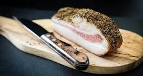
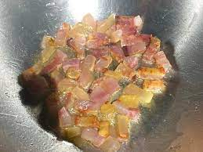
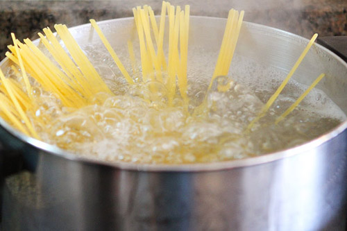
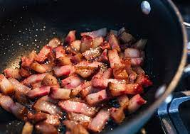

body, html {
height: 100%;
background-image: url("background.png");
background-position: center;
background-repeat: no-repeat;
background-size: cover;
}
Spaghetti alla carbonara
Passaggi
Per preparare gli spaghetti alla carbonara cominciate mettendo sul fuoco una pentola con l’acqua salata per cuocere la pasta.
Nel frattempo eliminate la cotenna dal guanciale e tagliatelo prima a fette e poi a striscioline spesse circa 1cm.
La cotenna avanzata potrà essere riutilizzata per insaporire altre preparazioni.
Versate i pezzetti di guanciale in una padella antiaderente e rosolate per circa 10 minuti a fiamma medio alta, fate attenzione a non bruciarlo altrimenti rilascerà un aroma troppo forte.
Nel frattempo tuffate gli spaghetti nell’acqua bollente e cuoceteli al dente.
Intanto versate i tuorli in una ciotola.

Aggiungete il Pecorino e insaporite con il pepe nero.
Amalgamate il tutto con una frusta a mano, sino ad ottenere una crema liscia.
.jpg)
.jpg)
Intanto il guanciale sarà giunto a cottura; spegnete il fuoco e utilizzando un mestolo prelevatelo dalla padella, lasciando il fondo di cottura all'interno della padella stessa.
Trasferite il guanciale in una ciotolina e tenetelo da parte.
Versate una mestolata d’acqua della pasta in padella, insieme al grasso del guanciale.
Ed ecco la tua carbonara
link pagina esterna